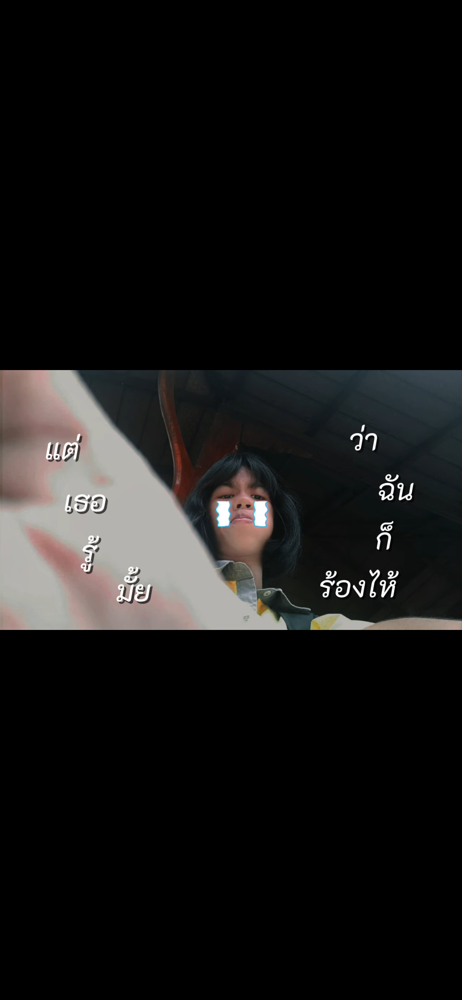
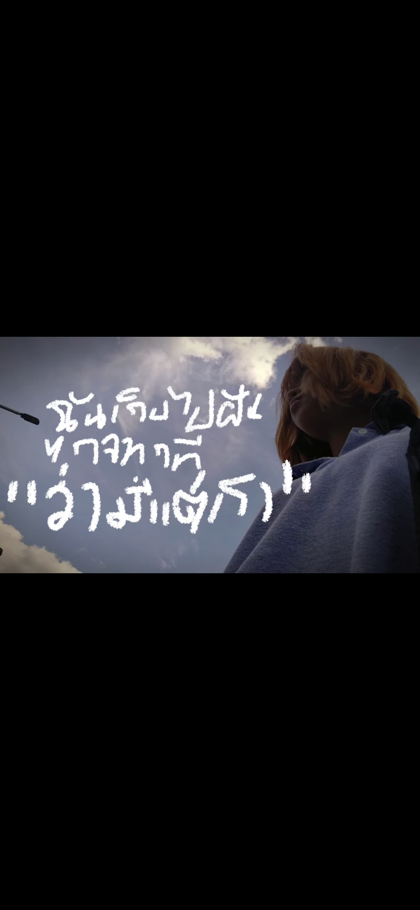
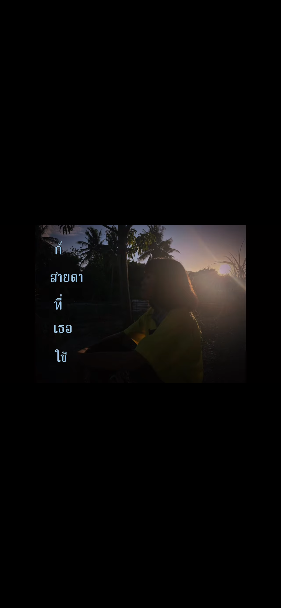
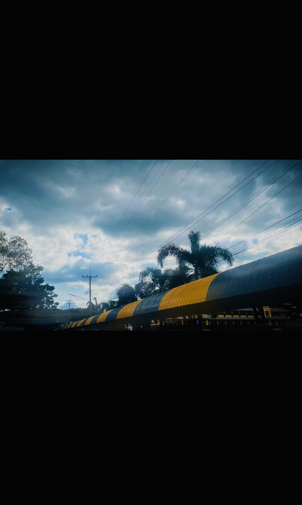
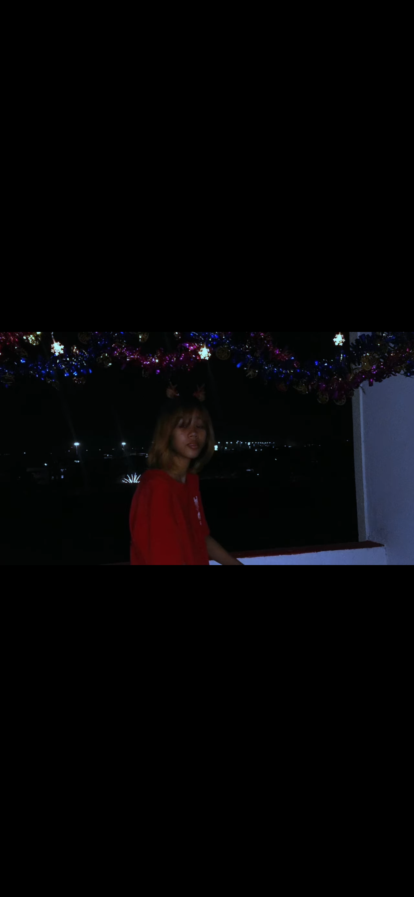
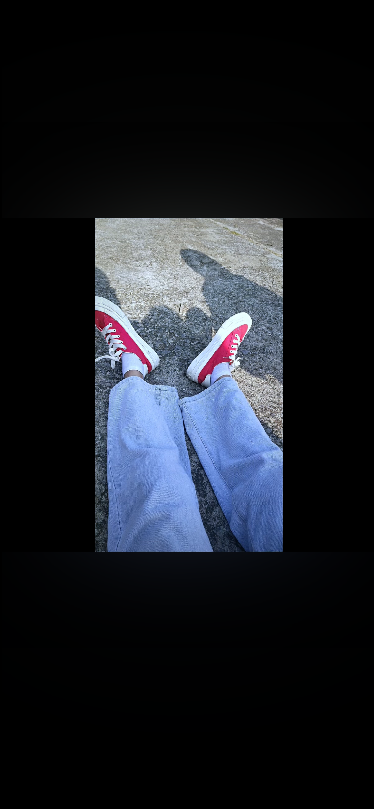

01 / SINGLE
ทำไมไม่พูด
Beat by Harui
Written, Composed, Mixed & Mastered by FV.
INDEPENDENT ARTIST
สร้างเพลงในแบบที่เป็นตัวเอง
Music from feeling.
A LITTLE ABOUT ME
สวัสดี เราคือ FV. ศิลปินอิสระที่อยากถ่ายทอดความรู้สึก และเรื่องราวผ่านเสียงเพลง
ทุกเพลงมีเรื่องราวของตัวเอง ขอบคุณที่เข้ามาฟัง และเป็นส่วนหนึ่งของการเดินทางครั้งนี้
Thank you for listening. More music is on the way.
MY SONGS, MY STORIES
เลือกเพลงที่อยากฟัง แล้วไปฟังกันบน YouTube

01 / SINGLE
Beat by Harui
Written, Composed, Mixed & Mastered by FV.

02 / SINGLE
Beat by Velvet Boulevard
Written, Composed, Mixed & Mastered by FV.

03 / SINGLE
Beat by Sam Calisto
Written, Composed, Mixed & Mastered by FV.
04 / SINGLE
Beat by Sam Calisto
Written, Composed, Mixed & Mastered by FV.

05 / SINGLE
Beat by Jimi Beats
Written, Composed, Mixed & Mastered by FV.

06 / SINGLE
Beat by Luarlang
Written, Composed, Mixed & Mastered by FV.

07 / SINGLE
Beat by Sam Calisto
Written, Composed, Mixed & Mastered by FV.
LET'S STAY CONNECTED
ติดตามผลงานใหม่ ๆ และพูดคุยกันได้ทางโซเชียล